Activity: Generating a report in an assembly
There are many options for getting reports from an assembly. The activity will show how to utilize some of these options.
Overview
-
The objective of this activity is to demonstrate some of the options when generating an assembly report.
Activity
-
In this activity you will use different options to create assembly reports.
The assembly you open has assemblies and subassemblies with parts at all levels.
-
Click the File tab→Open→Browse and select top.asm from the folder where the activity files are located.
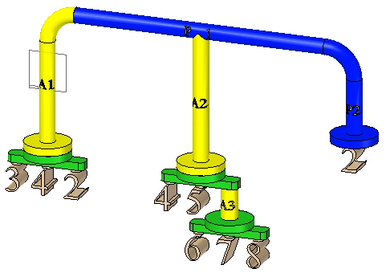
Expand PathFinder to show all the parts and subassemblies.
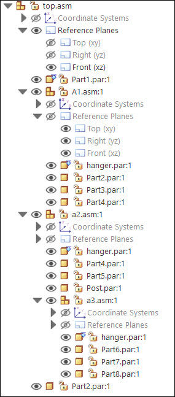
Choose the Tools tab→Assistants group→Reports command .
Select the options shown, and then click Format.
In the Bill of Materials Format dialog box, click Options.
Use the Add and Remove buttons to set the options as shown and click OK.
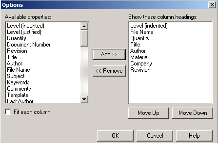
Click OK. The report is generated. Observe the results. Save the report as rich text format as bom.rtf in the folder where the activity files are located.
Click New Report to generate an exploded bill of materials report.
Select the options shown, and then click Format.
In the Exploded Bill of Materials Format dialog box, click Options.
Use the Add and Remove buttons set the options as shown and click OK.
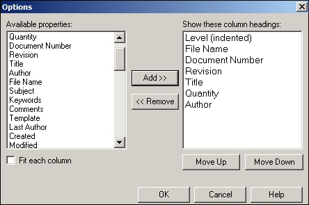
Click OK. The report is generated. Observe the results. Save the report as rich text format as exploded_bom.rtf in the folder where the activity files are located.
Click New Report to generate a summary of atomic parts report.
Select the options shown, and then click Format.
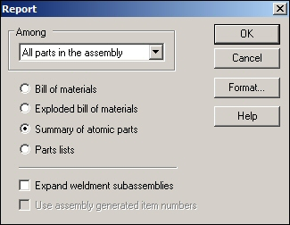
In the Summary of Atomic Parts dialog box, click Options.
Use the Add and Remove buttons to set the options as shown and click OK.
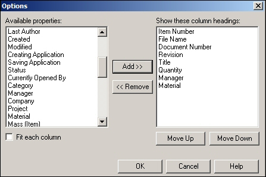
Click OK. The report is generated. Observe the results. Save the report as rich text format as atomic.rtf in the folder where the activity files are located.
Click New Report to generate a parts list report.
Select the options shown, and then click Format.
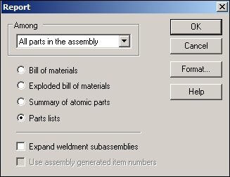
In the Parts List Format dialog box, click Options.
Use the Add and Remove buttons to set the options as shown and click OK.
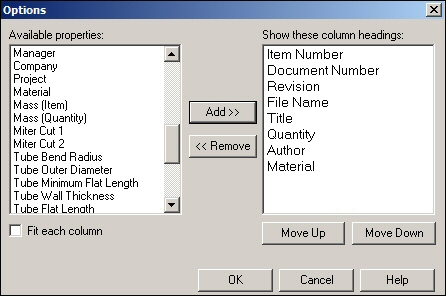
Click OK. The report is generated. Observe the results. Save the report as rich text format as parts_list.rtf in the folder where the activity files are located.
Click Close.
Item numbers can be assigned at the assembly level and used downstream in reports and on a drawing sheet.
Click the File tab.
Click Settings→Options, and then click the Item Numbers tab.
Set the options as shown.
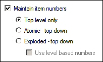
Item numbers are determined by the Assembly PathFinder order. Item numbers can be controlled by editing the Occurrence Properties in PathFinder.
Click Apply, and then click OK to dismiss the Solid Edge Options dialog box.
To view the Occurrence Properties for the top level of the assembly, right-click top.asm in PathFinder, and then choose Occurrence Properties.
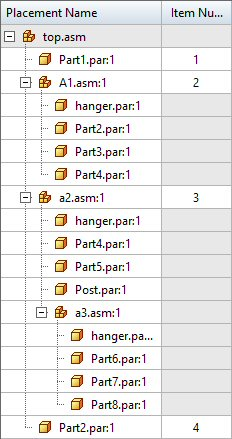
Click OK.
Choose the PMI tab→Annotation group→Balloon command .
Set the balloon shape to Circle .
Ensure that the Item Number and Item Count buttons are selected as shown.
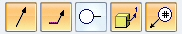
Click Lock Dimension Plane .
Select the Front reference plane as shown.
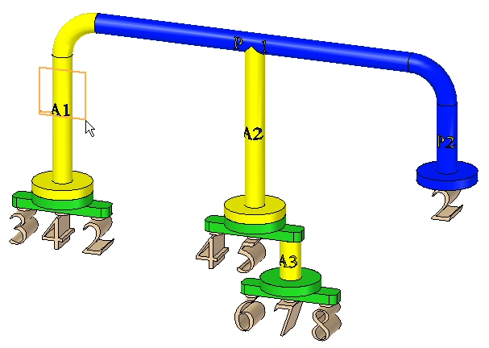
Annotate the parts as shown. Placement is approximate.
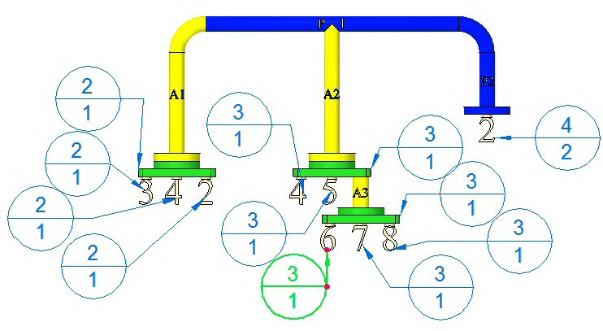
Click Save
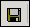
to save the assembly.Click the File tab.
Click New→Drawing of Active Model.
Browse for the template iso metric draft.dft.
Check the Run Drawing View Creation Wizard check-box and then click OK.
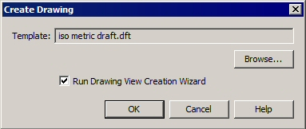
Click the Drawing View Layout button and select the Front View.
Click OK.
Place the view on the drawing sheet as shown.
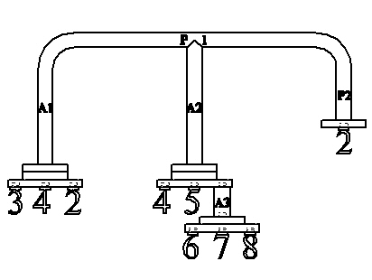
Choose Home tab→Dimension group→Retrieve Dimensions command
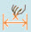
.Select the view. The balloons created in the assembly are placed on the drawing sheet with the corresponding item numbers.
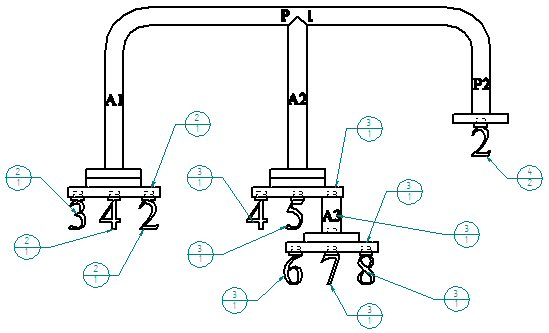
Save the draft document as top_level.dft.
Close the draft file. The assembly document is displayed.
Close the assembly.
Open the assembly top_atomic.asm with all the parts active.
Click the File tab.
Click Settings→Options, and then click the Item Numbers tab.
Set the options as shown.
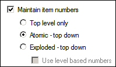
Click Apply, and then click OK to dismiss the Solid Edge Options dialog box.
Choose the PMI tab→Annotation group→Balloon command .
Set the balloon shape to Circle .
Ensure that the Item Number and Item Count buttons are selected as shown.
Click Lock Dimension Plane .
Select the Front reference plane as shown.
Annotate the parts as shown. Placement is approximate.
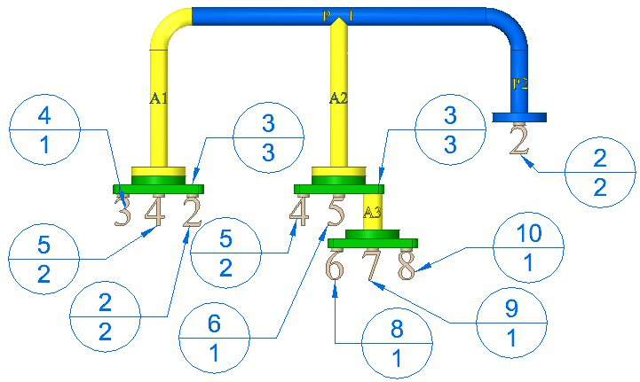
Click Save to save the assembly.
An optional step is to create a drawing sheet as you did for the top level item numbers, and place the front view and the balloons on the drawing sheet.
Close the assembly.
Open the assembly top_explode.asm with all the parts active.
Choose the File tab→Settings→Options→Item Numbers tab.
Set the options as shown.
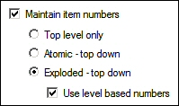
Click Apply, and then click OK to dismiss the Solid Edge Options dialog box.
Choose the PMI tab→Annotation group→Balloon command .
Set the balloon shape to Circle .
Ensure that the Item Number and Item Count buttons are selected as shown.
Click Lock Dimension Plane .
Select the Front reference plane as shown.
Annotate the parts as shown. Placement is approximate.
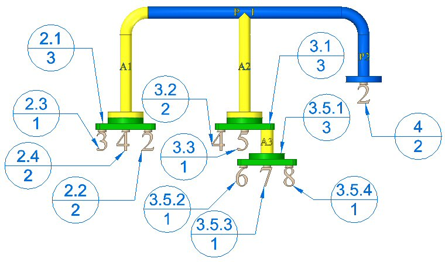
Click Save to save the assembly.
An optional step is to create a drawing sheet as you did for the top level item numbers, and place the front view and the balloons on the drawing sheet.
Save and close the assembly. This completes the activity.
In this activity you learned some of the options available for generating assembly reports.
-
Click the Close button in the upper-right corner of this activity window.
Answer the following questions:
-
When item numbers are maintained, what is the difference between top level only, Atomic — top down, and exploded — top down?
-
What are level based item numbers?
-
If item number PMI balloons are placed in an assembly document, are you able to see these in a draft document, and if so, how?
-
Can the user define item numbers and if so how?
-
When item numbers are maintained, what is the difference between top level only, Atomic — top down, and expolded — top down?
The different item number schemes are defined as follows:
-
Top level only item numbers are assigned to only the items directly placed in an assembly. These can be assemblies or parts placed into an assembly, but not the parts within the assemblies. These items are what pathfinder displays when every member is collapsed.
-
Atomic — top down item numbers are assigned to only the parts that make up an assembly regardless of whether they are in the top level, or whether they are in a subassembly. Assemblies do not get item numbers, only parts.
-
Exploded— top down item numbers are assigned to both parts and assemblies by the order they appear in pathfinder.
-
-
What are level based item numbers?
Level based item numbers will have a number for each part or assembly. Parts and parts in subassemblies will be designated by which top level member they belong to, separated by a period. You can quickly tell which parts belong to subassemblies. See the table below for an example of all item numbering schemes.
Level 1
Level 2
Level 3
Top level only
Atomic -Top down
Exploded - Top down
Use level based numbers
Top assembly
A1
1
1
1
P1
1
2
1.1
P2
2
3
1.2
A2
4
1.3
P3
3
5
1.3.1
P4
4
6
1.3.2
P6
5
7
1.4
P7
6
8
1.5
P2
2
2
3
2
P4
3
4
6
3
A2
4
4
4
P3
3
5
4.1
P4
4
6
4.2
P5
5
7
9
5
-
If item number PMI balloons are placed in an assembly document, are you able to see these in a draft document, and if so, how?
The view containing the PMI balloons in assembly is placed onto a drawing sheet. The retrieve dimension command will display the balloons on the drawing sheet.
-
Can the user define item numbers and if so how?
User defined item numbers can be defined by right clicking the top level assembly in pathfinder, and then clicking occurrence properties. You can:
-
Change existing item numbers.
-
Add missing item numbers using the Next Available Number command on the shortcut menu.
-
Use the Reset Item Numbers command on the shortcut menu to cancel your edits and restore the item numbers generated by the assembly structure.
-